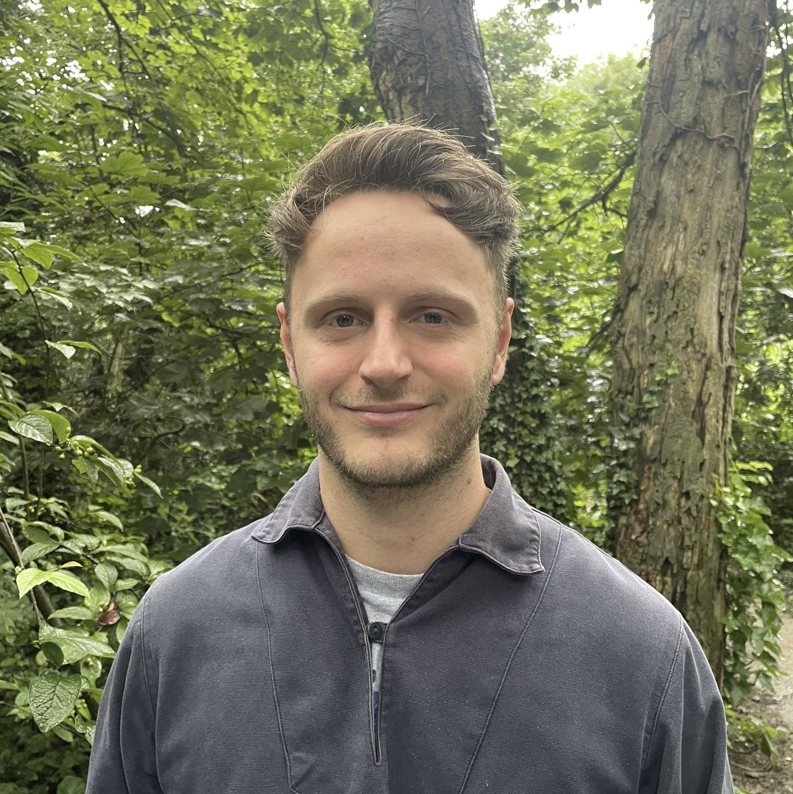

Adam Gardner
Front End Developer

A front end developer with 3 years industry experience, I have a passion for creating clean, responsive UI's for the modern web. Especially adept at developing websites using React and Next.js, and styling web components using Sass. Experienced with owning and delivering features through the full development lifecycle.
Experience
Front End Developer
- Implemented a customisable tile on the buy page, boosting clickthroughs to the enquiry page by 15%.
- Built and styled a new enquiry page, translating Figma designs into code and seeing a 10% uptake in enquiries received.
- Integrated with Contentful CMS to create pages that staff could change without needing to deploy code. This lead to a huge reduction in the number of tickets raised for content changes, especially from the editorial team who could now upload and edit articles without developers helping.
- Developed a multi-step consignment form using React and Redux, enhancing the seller journey as this was previously handled with a Google form.
- Support teammates ranging from junior to senior, sharing tips and advice while helping to fill gaps in their knowledge.
- Write extensive documentation on features I've delivered and provide useful content to the business such as feature walkthrough videos.
- Deliver presentations to the team on topics such as functional components and code commenting, resulting in reduced code bloat and improved code readability.
Junior Developer
- First hire in the tech team for a fast paced, rapidly growing start up.
- Worked with editorial and consignment teams to craft an in-house CDN, including an auction upload/edit console, sales dashboards and VIN number validator.
- Designed V2 API endpoint architecture, eliminating a surplus of network requests.
- Responded to ad hoc business requests in a timely manner to help maintain business as usual.
- Involvement in stakeholder workshops to understand requirements and integrate projects in an agile manner.
- Proactively contributed ideas on how to optimise workflow, potential new features and site improvements.
Front End Developer - Contract
- Asked by the DevelopMe_ bootcamp to lead front end development for a job management app.
- Gathered requirements, planned the MVP and evaluated the most suitable technologies.
- Worked closely with the UX Designer to expand upon wireframes and implement design feedback from both herself and the Project Lead.
Full Stack Web Development Student
- Completed an intense 3 month bootcamp with DevelopMe_ covering the full software delivery lifecycle from requirements gathering, development to later testing and deployment of full stack web applications using Laravel and React.
- Collaboratively delivered two projects as part of teams of 4 using Gitflow. Projects delivered include:
- MeMovie - a mobile-responsive full stack movie picking app built using React and Laravel and deployed on Heroku. User authentication handled with JSON Web Tokens. Built independently.
- Team Generator App - a full stack app built using React and Laravel deployed on Heroku. Built independently.
- Lockdown Olympics App - a React/Redux app with a Laravel API deployed on an AWS EC2 instance. Built as a team of 4 remotely using Git.
- Neu.js - contributed to an accessible, React component library styled using Sass to neumorphic design. The real focus here was on making my first open-source contribution with professional documentation using Storybook.